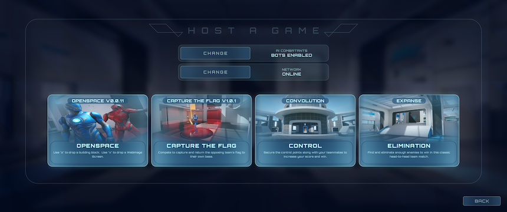

{% include JB/setup %}
How
OpenWorld is built using:
Unreal engine 5 + Lyra Starter Game + Open Source community driven and reviewed Plugins.
UE5 gives a complete High End “Next Gen” game engine, with all Source Code that is publicly available.
UE5’s Lyra Starter Game gives a starting point for basic builds, characters, network play, etc.
